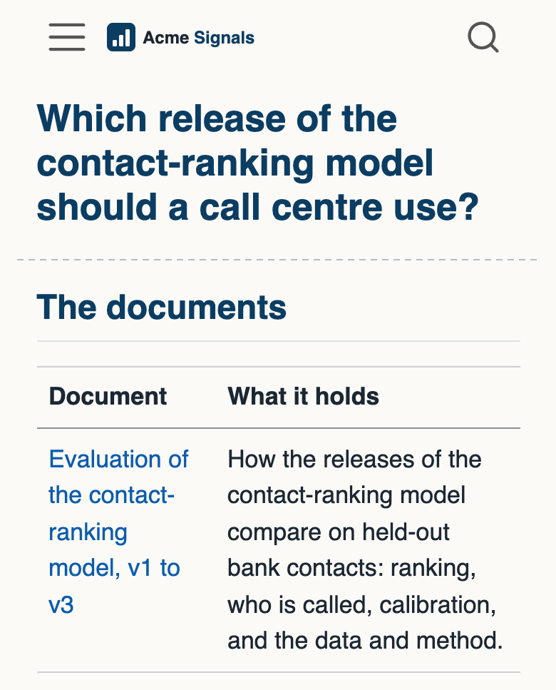

The evaluation now has a report, a model card and a deck, in three formats each, scattered across a folder. Investors, a client’s risk team and a new colleague will each want the latest version, from one address, and they will judge the work partly by whether it looks like it came from one place. A small team has no designer for that. It has a site, built from the same sources, and one file that says what the company’s colours, type and logo are, which every format then follows.
In this chapter
Say what one brand file reaches in Quarto, and how Word and PowerPoint get the same look.
Ask for a website from an existing project: a render list, a navbar, a footer, a home page with a listing, an About page and social cards.
Check every page of a site for alt text, titles, descriptions, heading order and contrast with a script.
Decide where a branded site may be published, and what to set before it is.
Start fromyour acme-eval repository at the end of Chapter 11, or checkpoints/16-eval-slides/.
You build_brand.yml and a logo, Word and PowerPoint templates made from it, and a site of five pages, with a check script.
Checkpointcheckpoints/17-eval-site/
What you will build

Figure 12.1: The finished site’s home page at a phone’s width, rendered from checkpoints/17-eval-site/.
12.1 One brand, every format
A brand file, _brand.yml, states a company’s look once: a palette of named colours, the roles they play (background, foreground, primary), the fonts, and the logo. Quarto reads it and applies it, but not to every format. Which formats it reaches decides how you build the rest:
Table 12.1: Where one brand file reaches, in Quarto 1.10.20.
Format
What _brand.yml gives it
Web pages, sites and dashboards
colours, fonts and the logo in a navbar
Reveal.js decks
colours, fonts and the logo on each slide
Typst PDFs
page and text colours, heading fonts, the logo
Word and PowerPoint
nothing: each gets a reference document, made from the brand by a script
So the plan is one source of truth with two routes out of it: Quarto applies the brand where it can, and a short script turns the same file into the two templates where it cannot. Change a colour in _brand.yml, rerun the script, render, and every format follows.
12.2 The brand file
The brand file starts from the deck’s theme, now in one place that every format reads.
Ask your coding agent
Add _brand.yml with Acme's colours from acme.scss as a palette and the roles primary, background and foreground, system fonts, and a logo at brand/logo.svg (a wordmark; say in a comment the company is fictional). Make slides.qmd use it (theme: [default, acme.scss, brand]), move every colour out of acme.scss, and make tests/test_deck_contrast.py read the colours from _brand.yml. Render the deck and the report, run the tests, and tell me where the brand's colours appear in each output.
Expect it to run
writes _brand.yml and brand/logo.svg · edits acme.scss, slides.qmd and the test · renders · uv run pytest
The brand’s text colours are the deck’s, those of Table 11.5, and the same test checks them, now reading _brand.yml, the source of truth, rather than a copy. Verify where the brand landed, as the prompt asks: in the site’s or deck’s CSS, the colours appear as variables; in a Typst PDF, they set the page and the headings.
Table 12.2: Met while testing the brand, 2026-11-18.
What you see
The fix
Sass stops: “Undefined variable”
brand last in the deck’s theme: list
Typst warns “unknown font family”
no generic sans-serif in the brand’s fonts
Charts ignore the brand
a helper gives matplotlib the brand’s ink and paper
12.3 Word and PowerPoint, in the same colours
Word and PowerPoint take their look from a reference document (Section 11.6). Make both from the brand with one script, so that a change of colour reaches them too:
Ask your coding agent
Turn scripts/make_pptx_reference.py into scripts/make_reference_docs.py, which also makes templates/acme-reference.docx from Quarto's default reference.docx with the brand's colours and font (in its theme and its Title and Heading styles). Use it as the docx `reference-doc` of report.qmd and model-card.qmd, render both, and check the colours in the Word files.
The check is in the Word file, a zip of XML: its theme’s and its styles’ colours must be the brand’s. Quarto’s default document colours headings and links from its own theme’s accent, and the title not at all, so the script writes the brand’s colours into those styles. Check the file, not the script. And check a Word file in Word, and in whatever your readers open it with: Apple’s Quick Look showed the body in Times until the script also named the font in Word’s Normal style. Last, except the template from .gitignore, which ignores every rendered *.docx: !templates/*.docx.
12.4 A site from the project
A Quarto website is a project whose _quarto.yml lists its pages and how to navigate them. Everything else on a modern site is vocabulary you can ask for:
Table 12.3: A website’s pages and navigation (Quarto 1.10.20).
Ask for
Quarto calls it
exactly these pages
an explicit render: list
a menu with the logo
navbar:, whose logo comes from the brand
a line on every page
page-footer:
an About page
about: with a template: jolla, trestles, solana, marquee or broadside
social cards: open-graph: true, with site-url and a description on each page
the other formats of a page
Quarto’s “Other formats” links (format-links)
Ask your coding agent
Make this folder a Quarto website: _quarto.yml with an explicit render list (index.qmd, about.qmd, report.qmd, model-card.qmd, slides.qmd), execute-dir project, a navbar with the brand's logo, a page footer with the fictional-company notice and the data's CC BY 4.0 credit, site-url https://example.org/acme-eval/, open-graph, and a description on every page, with index.qmd and about.qmd as stubs for now. Render the site and list the pages and any warnings.
Expect it to run
writes _quarto.yml · adds descriptions · uv run quarto render → _site/
Ask your coding agent
Write index.qmd: a first sentence stating the headline result as inline code with a guard, then a table listing of the three documents. Write about.qmd: an about page with the trestles template. Render the site and tell me what the home page's first sentence says.
Expect it to run
writes index.qmd and about.qmd · uv run quarto render → _site/
You do
uv run quarto preview · open the address it prints, and the site on a phone-sized window
The home page’s first sentence is the headline, computed and guarded like any other: in the finished site, v3 is named as the release that ranks best, with its numbers read from outputs/. Its description, written once in the page’s front matter, feeds the listing on the home page, the search index, the page’s <meta> tag and the card a chat app shows when someone pastes the link. So write one sentence per page, without numbers, because a description is front matter and cannot compute.
site-url is a placeholder until you know where the site will live; set it before publishing, because social cards need absolute addresses for their images. Then check what you asked for:
Render list: README.md and the notebooks are not pages.
Navbar: the logo shows against it.
Footer: the notice and licence on every page.
Search: a word from the report finds it.
Social cards: og: tags on every page.
Other formats: Word and PDF, one click away.
WarningCommon pitfall
Once the folder is a website, every render writes into _site/, a single file’s too, so scripts that expected slides.html beside the source must look in _site/. The deck’s PDF and alt-text scripts failed until they did.
From the build log
In the test run of this chapter, the navbar took the brand’s primary colour, a navy. The logo was the same navy, so the bar hid it. background: light in the navbar fixed it. A build log reports what was written, not what can be seen: look at the site, not only its log.
Figure 12.2: Without background: light, the navbar takes the brand’s navy, and the logo’s name, drawn in the same navy, all but vanishes.
Figure 12.3: With background: light, as the finished site has it, the logo can be seen.
12.5 Checks for every page
A person checks the page they are looking at. A script checks every page, every time. Ask for the checks a site most often fails, as code:
Ask your coding agent
Write scripts/check_site.py: after a render, check every page in _site/ for alt text on every image, a lang attribute, a title, a description meta tag and no skipped heading levels, and that the brand's text colours have a contrast of at least 4.5:1 on its background. Run it and fix what it finds.
Pause and think
check_site.py passes on every page. Name one thing it has proved on all of them, and one thing only your eyes can check.
Answer
Proved: every image has alt text, every page a title, a description and a language, and no heading level is skipped. The contrast check proves the colours in _brand.yml pass 4.5:1, not the pages. Not proved: that the pages use only those colours, that the alt text is true, that the logo can be seen on its bar. A script checks every page for what can be stated as a rule; you check one page for everything else.
The checker’s first run found two problems, both on the deck’s page. Reveal.js showed the brand’s logo with no alt text, until _brand.yml gave it one, and wrote no description tag, until a short filter added it from the page’s description. Neither shows on the screen; both are what the script is for. Each check is a common failure:
Alt text is what a screen reader announces in place of an image (Section 6.7).
A language tells a screen reader how to pronounce the page.
A title and a description are what a search result and a shared link show.
Headings that skip a level confuse anyone who navigates by headings.
Contrast is the rule of Section 11.4, applied to the whole brand.
The script does not replace looking at the site, or a full audit such as Lighthouse’s accessibility score; it catches the regressions that a new page or a new colour would otherwise slip in.
Stuck for two minutes? Paste this into your agent. It backs up your work and brings the project to this point; then carry on from here.
Catch me up: follow ../quarto-workshop/checkpoints/17-eval-site/README.md
12.6 Where a branded site may go
The site is static files in _site/, published like the London guide’s (Section 9.4), to any of the hosts of Section 9.2. Two decisions come first. Who may see it. A public evaluation of a public dataset can go on any public host; an evaluation of a client’s data cannot: a free GitHub account publishes Pages from public repositories only; private repositories need a paid plan, and a site only your organisation can see needs GitHub Enterprise Cloud (Appendix K). Private work needs a host your organisation approves. Where it lives, so that site-url can be set and the social cards work.
ImportantTry it
Build the brand, the templates, the site and the check script, and preview the site.
You’re done when one _brand.yml sets the colours of the site, the deck and the PDFs; the Word and PowerPoint files are in the same colours; check_site.py reports no problems; and the home page’s first sentence names the best release.
Summary
One _brand.yml sets colours, fonts and the logo for web pages, Reveal.js decks, Typst PDFs and dashboards; Word and PowerPoint get them through reference documents a script makes from the same file.
A website is a project: an explicit render list, a navbar, a footer, a listing home page, an About page, search, and a description on every page that feeds listings, search and social cards.
Descriptions are front matter and cannot compute: write them without numbers.
Check every page with a script (alt text, language, title, description, heading order, contrast), and still look at the site.
Decide who may see a site before choosing where it goes, and set site-url before publishing.
The last of the evaluation’s core outputs is the one that has to stand on its own outside the company: a technical white paper, with references a reader can check.